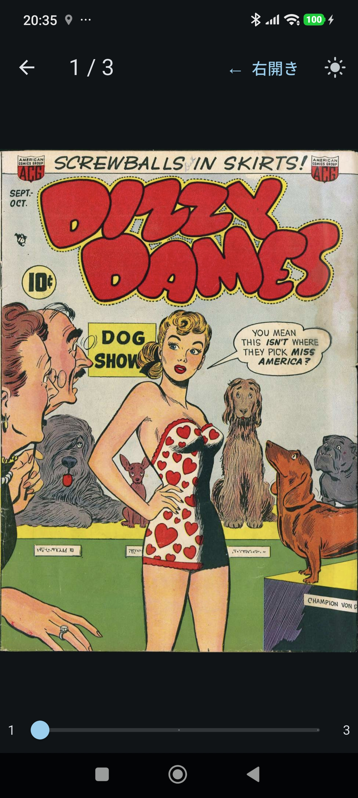
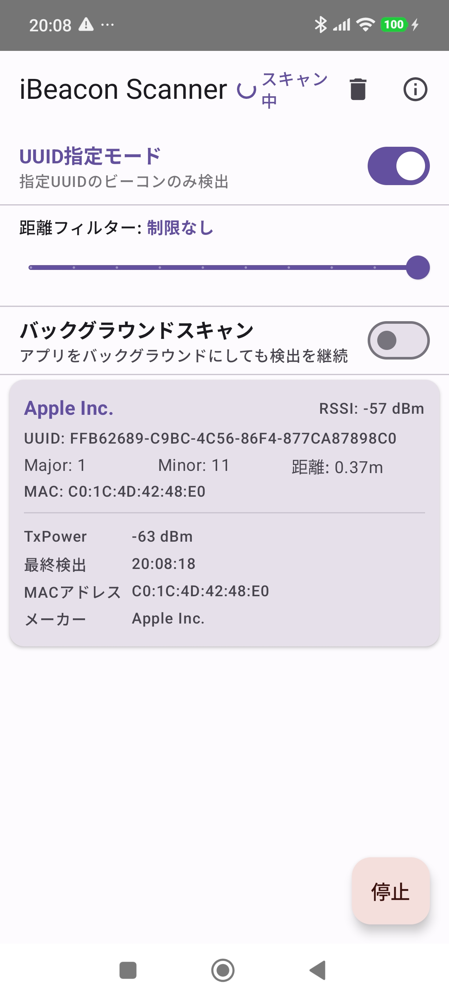
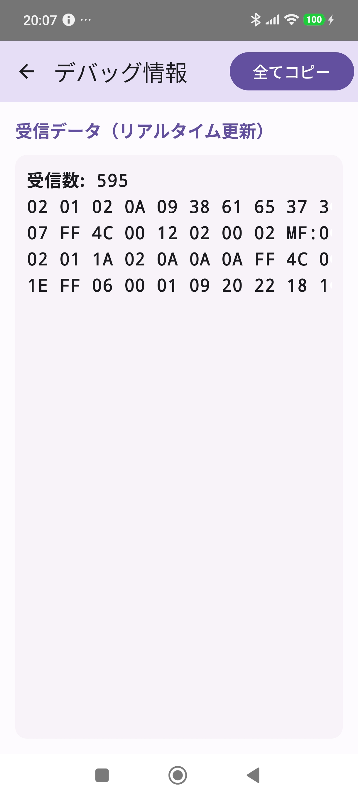

📱 Android Apps
Flutter・Kotlin / Jetpack Compose で開発したAndroidアプリ一覧です。
Komic Viewer for Android
Windows版Komic ViewerのAndroid版。Flutterで構築した軽量コミックビューアーです。ZIP/CBZ形式のコミックをスマートフォンで快適に閲覧できます。
作成の経緯・開発ストーリーを読む
作成の経緯
Windows版のKomic Viewerをスマートフォンでも使いたくなり、Flutterで開発しました。Androidアプリが作れるか検証も兼ねています。結果、スペックの作成からビルド・リリースまですべて完結できました。
FlutterでAndroidアプリ...イケた
Flutterは初めてでしたが、仕様を伝えるだけでアプリが形になっていくのは新鮮でした。ピンチズーム、ページスライダー、本棚機能、読み方向切り替えなど、コミックビューアーとして必要な機能を一通り実装できています。
主な機能・特徴を見る
- 本棚機能: 開いたコミックを自動登録、グリッド/リスト表示切り替え
- 対応形式: ZIP, CBZ, EPUB形式をサポート
- 読み方向: 右開き（右→左）/ 左開き（左→右）切り替え対応
- ピンチズーム: 2本指で1x〜4xまで拡大可能
- ページスライダー: スライダーで素早くページ移動
- 読書進捗保存: 最後に読んだページを自動記憶
- ダークテーマ: ライト/ダーク切り替え対応


iBeacon Scanner (Kotlin + AltBeacon)
Kotlin + Jetpack Compose + AltBeacon で構築したAndroidネイティブのiBeaconスキャナー。UUID指定フィルター・距離フィルター・バックグラウンド検出通知に対応しています。
作成の経緯・開発ストーリーを読む
作成の経緯
以前 Java (Android SDK) で開発していたiBeaconスキャンツールを、Kotlinで書き直しました。最近はJavaではなくKotlinが主流になっているため、モダンな言語に移行することが主な目的です。合わせて最新のAndroid環境でも動作するよう、権限周りも最新のAPIに対応させています。
BLE関係は権限も含めてどんどん厳しくなってますね
画面オン・アプリバックグラウンド状態での検出は今でも実現できましたが、画面オフ時にスキャンが強制停止されることがあり。これはテストで使用した端末側の制限でアプリでは回避できないっぽい...
主な機能・特徴を見る
- UUID指定モード: 特定UUIDのビーコンのみ検出するフィルター機能
- 距離フィルター: 指定距離以内のビーコンのみ表示
- バックグラウンド検出: 画面オン・アプリバックグラウンド状態での検出に対応
- 新規検出通知: 新しいビーコン検出時にローカル通知を表示（30秒タイムアウト）
- Apple / Aplix対応: 両メーカーのiBeaconフォーマットに対応
- 商用利用無料: AltBeacon（Apache 2.0）使用

BLE Scanner (Kotlin)
Androidネイティブ（Kotlin + Jetpack Compose）で構築された汎用的なBluetooth (BLE) スキャナーアプリ。iBeaconやEddystoneなどの解析に加え、独自フォーマットの解析にも対応しています。
作成の経緯・開発ストーリーを読む
作成の経緯
本格的なiBeaconスキャナーを開発する一歩手前で「まずは周囲のBluetooth(BLE)の状態を正確に把握したい」という想いから生まれたアプリです。iBeaconのスキャンロジックを組み上げる前の、いわば「土台」として動作確認や状況把握のために開発した経緯があります。当時はJavaで実装していましたが、今回、iBeaconスキャナーと同様に最新のKotlin + Jetpack Compose環境へ移植・再設計を行いました。
Antigravity をフル活用した初のAndroid開発プロジェクト
AIコーディングエージェント「Antigravity」との共同作業で開発。複雑なBLEのスキャンロジックや、GitHub Actions による「ビルド・署名・リリース」の全自動化をすべて「指示」だけで構築しました。GitHub Actions から直接APKをダウンロードできる仕組みも実装しています。
主な機能・特徴を見る
- 汎用BLEスキャン: 手に届く範囲の全BLEデバイスを一覧表示
- ビーコン解析: iBeacon, Eddystone（AltBeacon含む）を自動判別
- 独自パケット解析: Aplixなどの特定メーカー独自データの詳細表示に対応
- バックグラウンド動作: Foreground Serviceを使用し画面オフでもスキャン維持
- デバッグ機能: 計測データのグラフ化や一括ログ表示に対応
- CI/CD自動配信: GitHub Actions による最新ビルドの自動提供


Sound Viewer
デバイスのマイクから取得した周囲の音声をリアルタイムで解析し、音量に応じて画面中央のネオンブルーの円を動的に変化させるAndroid向けビジュアライザーアプリです。
作成の経緯・開発ストーリーを読む
作成の経緯
15年ほど前にJavaで同じようなAndroid音声ビジュアライザーを作っていたことがあります。当時はフーリエ変換のライブラリを自分で探し回り、使い方を調べながら苦労して実装していました。今回は「フーリエ変換を行って音声を可視化したい」という表現だけで、AIが妥当なライブラリを選択し、アプリとして実装できるのかを確認したくて作成しました。
15年前の苦労が嘘みたいだ...
結果、さらっと動くものが出来上がってしまい、正直ちょっと感動しました。あの頃ライブラリ選定だけで何日も費やしていたのが嘘のようです。
主な機能・特徴を見る
- リアルタイム音声解析: noise_meterによるマイク音声のリアルタイム取得
- FFT解析: ffteaによる周波数帯域（20Hz〜200Hz）の振幅抽出
- 動的ビジュアル: 振幅に応じた円のサイズ変化・グローエフェクト
- 滑らかな描画: AnimationControllerによる60fpsの補間描画
- ライフサイクル管理: バックグラウンド時の自動停止・復帰に対応